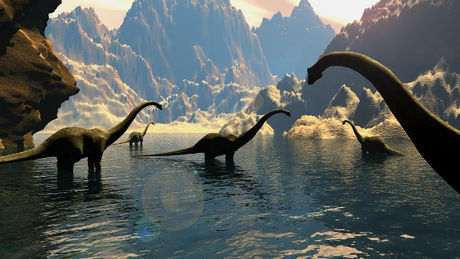

NOM:tyrannosaure rex ,roi de reptiles tyrans
Taille14metre de long 6 metre de haut
nourritureviande
epoquede 67 millions d'annees jusqu'au cretace
l'ére de dinosaures

L'ère des dinosaures
Les dinosaures
apparaissent au Trias supérieur, il y a 230 millions d'années et ils disparaissent à la fin du Crétacé, il y a 65 millions d'années.
Les dinosaures dominaient leur monde...
lire la suite